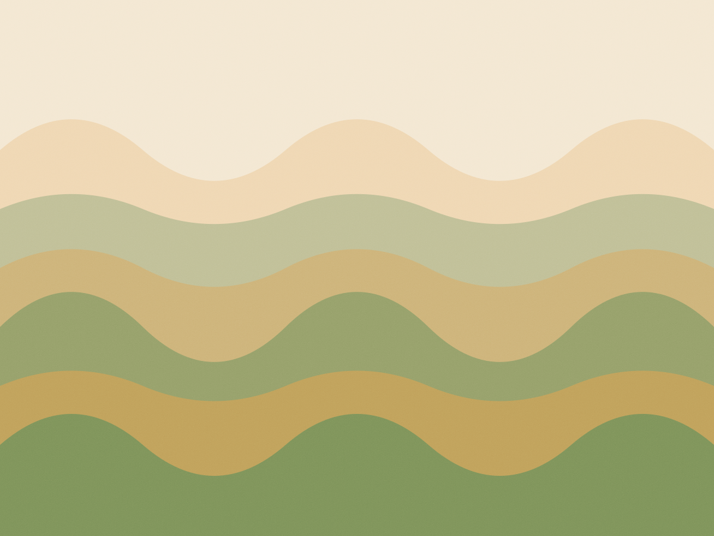

De 2 a 6 anos · portão abre 7h
Doze crianças por turma, rotina de hora em hora
O dia inteiro fica escrito na parede, em cartões com desenho e na altura dos olhos de quem ainda não lê. Mensalidade de R$ 980, com almoço, lanche da manhã e da tarde inclusos. Duas educadoras por sala, sempre as mesmas.

- Idades2 a 6 anos
- Por turma12 crianças
- Por sala2 educadoras
- Portão7h às 19h
Um dia comum
A rotina não muda de turma para turma
O horário é o mesmo do Maternal I ao Pré II. O que muda é quanto tempo cada grupo aguenta em cada coisa: o Maternal I fica quinze minutos no ateliê, o Pré II fica quarenta.
A Rita, coordenadora, imprime a rotina toda segunda e cola na parede da sala. Se chove e o parque vira sala de movimento, o cartão do parque sai da parede e outro entra. As crianças reclamam quando o cartão não muda.
-
7h
Acolhida
Cada criança guarda a mochila no escaninho com o nome e vai para a mesa de massinha. Quem chega chorando fica com a educadora na porta até se soltar.
-
8h15
Roda de leitura
Um livro por dia, lido em voz alta com o livro virado para a roda. O mesmo título fica três dias na sala — é assim que a criança reconta a história de cabeça.
-
9h
Lanche da manhã
Fruta da estação cortada, sem açúcar e sem suco. Quem tem restrição alimentar tem prato separado, com a lista na porta da cozinha.
-
9h30
Quintal
Duas jabuticabeiras, areia e o escorregador de madeira. Sol de manhã é o único horário em que o quintal pega sombra de verdade.
-
11h
Almoço
Arroz, feijão, uma proteína e dois legumes, cozinhados na escola. O cardápio da semana fica no mural da entrada, assinado pela nutricionista.
-
12h
Descanso
Colchonete, meia-luz e música baixa até as 14h. Quem não dorme fica na mesa de livros com a educadora, sem tela.
-
14h30
Lanche da tarde
Pão feito na casa ou bolo de banana, com leite. Nada de biscoito recheado — está escrito no combinado com as famílias desde 2018.
-
15h
Ateliê
Barro, tinta guache, colagem e sucata. A produção do dia seca na grade do corredor e vai para casa na sexta, com o nome e a data no verso.
-
17h
Saída
A partir das 17h, na porta da sala. Quem fica até as 19h tem jantar leve e jogo de encaixe no salão.
Quatro turmas, doze lugares em cada
A criança fica dois anos com a mesma educadora de referência. Quando muda de turma, muda de sala e de educadora — e a passagem é feita em três visitas antes do ano começar.
| Turma | Idade em março | Crianças | Adultos | Integral | Meio período |
|---|---|---|---|---|---|
| Maternal I | 2 anos | 12 | 2 + 1 apoio | R$ 980 | R$ 720 |
| Maternal II | 3 anos | 12 | 2 | R$ 980 | R$ 720 |
| Pré I | 4 anos | 12 | 2 | R$ 980 | R$ 720 |
| Pré II | 5 anos | 12 | 2 | R$ 980 | R$ 720 |
O que está incluso
- Alimentação completa: lanche da manhã, almoço, lanche da tarde e jantar para quem fica até as 19h.
- Material de ateliê, fralda de pano do Maternal I e uniforme de duas camisetas por ano.
- Um caderno de recado por criança, escrito à mão pela educadora, que vai e volta na mochila.
- Matrícula
- R$ 480, uma vez por ano
- Mensalidade integral
- R$ 980 · 7h às 19h
- Mensalidade meio período
- R$ 720 · 7h às 13h
- Segundo filho
- 15% de desconto na mensalidade menor
- Reajuste
- uma vez por ano, em janeiro, com aviso em outubro
Quem fica com eles das 7h às 19h
Dezenove pessoas na casa, contando cozinha e limpeza. A educadora de referência não troca no meio do ano — é o combinado com as famílias desde a fundação, em 2011.
-
Rita Camargo
Coordenação pedagógica
Pedagoga pela PUC-SP, 14 anos em educação infantil. Faz a entrevista de matrícula e a passagem de turma.
-
Soraia Bento
Maternal I · referência
Trabalha com dois anos há nove anos. É dela o cartão de rotina com desenho do penico, que fica na porta da sala.
-
Jéssica Amaral
Maternal II · referência
Formada em Letras, conta história com fantoche toda quarta. Também cuida da horta com o grupo.
-
Diego Ferraz
Pré I e Pré II · referência
Educador físico. Faz a passagem para o fundamental com a escola de destino, em outubro, criança por criança.
-
Marli Duque
Cozinha
Cozinha há 11 anos na casa. Faz o pão de toda manhã e guarda o prato de quem tem restrição, separado e etiquetado.
-
Tânia Muniz
Apoio · Maternal I
Fica com o grupo do berçário ao lado da Soraia. Cuida da troca, do sono e do contato com a família no fim do dia.
Matrícula para 2027 abre em 3 de agosto
Quatro vagas no Maternal I e duas no Pré I. A visita é com a Rita, dura quarenta minutos e inclui passar na sala com as crianças lá dentro — não é visita com a escola vazia.
Visitas: terça e quinta, às 10h, com agendamento por telefone.
-
Visita
Quarenta minutos com a coordenação. Você vê a rotina acontecendo e pergunta o que quiser sobre alimentação, sono e adaptação.
-
Entrevista
Uma conversa só com os adultos, sem a criança. Rotina de casa, alergias, quem busca, o que ela já come sozinha.
-
Documentos e contrato
Certidão de nascimento, carteira de vacina atualizada e comprovante de residência. Contrato assinado na hora, matrícula paga no pix.
-
Adaptação de cinco dias
Uma hora no primeiro dia, com o adulto na sala de espera. Aumenta meia hora por dia, e o horário cheio só entra quando a criança come e dorme aqui.
O que as famílias contam
O Tomás começou a arrumar o sapato sozinho porque o cartão do "calçar" estava na parede. Em casa eu repetia a mesma frase todo dia e não funcionava. Na escola, funcionou em duas semanas.
Helena Rocha, mãe do Tomás (Pré I) — Alto de Pinheiros
A Lia entrou no Maternal I com dois anos e não falava. A Soraia mandava três linhas no caderno todo dia, contando o que ela tinha feito. Em maio ela já pedia água.
Ivan Meireles, pai da Lia (Maternal I) — Sumaré
Depoimentos colhidos na reunião de famílias de novembro, com autorização de uso.